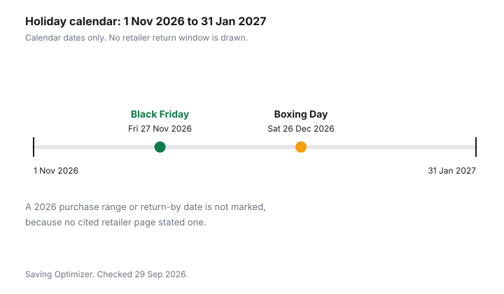

Clothing · Canada
Holiday Return Windows for Clothing in Canada (2026): Gift Receipts, Final Sale and Boxing Day Rules
A sweater bought in November often comes back in January, and the receipt, not a national holiday rule, decides the money. Canada does not run one clothing return window. Each banner prints its own dates, and a window labelled for 2025 is not a window for 2026. This guide is the seasonal companion to the store return policies guide. It covers gift receipts, final-sale tags, online return fees and what Ontario’s consumer page actually requires. It is education, not legal advice. If a purchase was misrepresented, or a contract was not honoured, use your province’s complaint path rather than a change-of-mind policy.
Key takeaways
- Ontario does not give shoppers a general right to return clothing. A store policy is voluntary unless the provincial page says otherwise. Other provinces: check your province.
- Use a 2026 holiday window only when that retailer’s page states the purchase-date range and the return-by date. A 2025 window is a past season. The Winners and Marshalls guide shows how to describe a past window without copying it forward.
- lululemon Canada’s return policy, as of 29 Sep 2026, is 30 days. H&M Canada’s returns page is 30 days after you receive the order, with a $3.99 fee on a return to the online warehouse and no fee in store. Neither page printed a 2026 holiday extension.
- Final sale is a tag and a receipt, not a Boxing Day law. Boxing Day 2026 is Saturday 26 December. Black Friday 2026 is Friday 27 November. Those are calendar dates.
- A price drop after you pay is the clothing price-adjustment guide, not an extra return day. Costco’s published window is 30 days, and Costco.ca does not match a warehouse price.
Extended holiday return windows (verify for 2026)
Write three dates on the gift before it goes under the tree: the purchase date, the last day the ordinary policy allows a return, and the last day any holiday extension allows a return. If the third date is not printed on the retailer’s own page for 2026, leave it blank.
A blog recap of last year’s January deadline is not this year’s deadline. The chart below marks only the calendar. It draws no purchase bar for a banner that has not published a 2026 window.
As of 29 Sep 2026, these clothing pages did not state a 2026 holiday purchase range or a 2026 return-by date:
- Old Navy and Gap Canada’s everyday-shipping offer page states free returns by mail or in store, and no returns or exchanges on final sale items. It does not print a November-to-January extension.
- lululemon Canada’s return policy: purchases within 30 days can be returned or exchanged. Online purchases can go back by mail or in a store. They cannot be processed at lululemon outlet stores. Exchanges are in a store. Returns must be in the same country as the purchase.
- H&M Canada: 30 days after you receive the order, items in good condition with labels attached. The page says it does not accept online or in-store returns after 30 days.
Winners, Marshalls, Mark’s, Sport Chek, Simons, Aritzia, Roots and Costco clothing each need their own page. This guide does not cite a 2026 holiday window for them. Check the retailer’s page, including the sign at the till, before you treat a gift as returnable in January. Costco’s satisfaction rules for warehouse merchandise are on the Costco clothing guide. They are not a holiday calendar.
| Retailer | 2026 holiday purchase range | Return-by date | Gift-receipt rule | Final-sale exclusions |
|---|---|---|---|---|
| Old Navy / Gap Canada | Check the retailer’s page | Check the retailer’s page. The shipping-offer page does not print a 2026 holiday date. | Check the retailer’s page | No returns or exchanges on final sale items, on the shipping-offer page. |
| lululemon Canada | Check the retailer’s page | Ordinary policy: 30 days from delivery (online) or purchase (in store). No 2026 holiday date on the policy page. | A gift return is not given its own sentence. Refunds go to the original card, a lululemon gift card, or as local law requires. | Gift cards are final sale. We Made Too Much sale items are final sale unless you are a member, in which case a return can be a gift card. |
| H&M Canada | Check the retailer’s page | 30 days after you receive the order. The page says no returns after 30 days. No 2026 holiday date. | Check the retailer’s page. Refunds use the original payment method. | Check the retailer’s page for category exclusions. The returns page requires good condition and labels. |
| Costco.ca / warehouse | Check the retailer’s page | Check the retailer’s page for a 2026 clothing holiday window. The 30-day figure on Costco’s site is a price adjustment, not a holiday return calendar. | Check the retailer’s page | Check the retailer’s page |
| Winners / Marshalls | Check the retailer’s page | Check the retailer’s page. Do not copy a past season’s January date into 2026. | See the Winners guide for how a gift receipt was described on a past page, then re-read the live page. | Check the retailer’s page |
| Mark’s, Sport Chek, Simons, Aritzia, Roots | Check the retailer’s page | Check the retailer’s page | Check the retailer’s page | Check the retailer’s page |
A practical worksheet, one row per gift: retailer, ordinary last day, holiday last day or “none printed,” whether a gift receipt was issued, whether the tag says final sale, and who pays return postage. If the holiday cell is blank on 29 Sep 2026, the ordinary window is the one you can plan around until the retailer prints a 2026 extension.
Gift receipts and store credit
A gift receipt is a proof of purchase that hides the price. It does not, by itself, create a cash refund to the person who opens the parcel.
Ask the cashier for it while the giver is still at the till. Without it, the recipient is in the no-receipt lane, and many banners answer that lane with store credit at a current selling price, or they decline the return. Ontario’s returns page tells you to ask what proof of purchase the store wants, including the receipt and tags, before you buy.
Store credit and a gift card are not the same object. A gift card is usually something someone bought. Store credit is often what a return produces. In British Columbia, Consumer Protection BC says store credit issued when you return a non-refundable good, and the page names a piece of clothing as the example, is allowed to have an expiry date because it is not legally a gift card. A prepaid card for a specific dollar amount generally cannot expire. Ontario’s gift-card page, updated 14 August 2026, bans expiry dates and dormancy fees on most retail gift cards, with exceptions for a single service and for charitable cards. The clothing gifts guide sets those rules out by province. Read the credit slip. If it expires, it may be store credit rather than a gift card, and the province decides which rule applies.
Amazon.ca’s return policy, as of 29 Sep 2026, tells a gift recipient to start from the Returns page with the 17-digit order number on the packing slip or the digital gift receipt. If you need an exchange, the page says to return the gift and place a new order. That is a different mechanic from a store that swaps sizes at the counter.
Final-sale and Boxing Day exclusions
Final sale means the store has removed the change-of-mind path. It can sit on clearance, on a doorbuster, on underwear, on pierced jewellery, or on a Boxing Day rail.
The Black Friday and Boxing Day clothing guide is about timing and ordinary-price claims. It does not turn 26 December into a statutory final-sale day. If the sign, the product page or the receipt says final sale, believe that sentence. If it does not, the ordinary policy still applies, including its short window.
lululemon’s Canada policy draws a member line through sale stock. We Made Too Much is final sale for a non-member. A member can make an in-store exchange or return those sale items for a lululemon gift card. Gift cards themselves are final sale. The product also has to be the original item, unworn and unwashed, with hang tags, and with proof of purchase. The policy says returns are handled case by case and that abuse, including excessive returns, can lead to a rejection. A membership is not a promise that every worn hoodie comes back.
H&M Canada refunds the value of returned items to the same payment method. It says it cannot refund extra charges a bank might apply. If you paid with a gift card issued by a financial institution, keep that card until the return is finished, because the refund goes back to it. That is H&M’s sentence, not a provincial gift-card rule.
Online returns and return-shipping fees
An extended window is worth less if the return trip costs more than the garment. H&M Canada, as of 29 Sep 2026, charges $3.99 to return an item to the online warehouse and says returns in store are always free.
The Old Navy and Gap Canada shipping-offer page says returns by mail use the interactive returns process, and in-store returns need the parcel, the shipping confirmation and the card used to pay. It also says there are no returns or exchanges on final sale items. It prices shipping at $8 on orders under $50 and free shipping at $50 and over of merchandise, not of gift cards. The shipping and return-fee guide compares those choices, including when adding a filler item is the expensive way to “save” the postage.
lululemon’s policy allows a mail return or a store return, except at outlet stores, and it does not print a return-shipping dollar amount on the policy page. Check the label step in your account before you assume the postage is free. Amazon.ca says most items include at least one free return option, and that a fee can apply if you pick an option that is not free, if the item is heavy or bulky, or if the account has an unusually high return rate. The dollar amount of that shipping fee is “varies.” A late return can be charged 20 percent of the item price for the first 30 days after the return-by date, and 100 percent after that. A damage fee can be up to 50 percent if tags are removed or the item shows use that is not Amazon’s or the seller’s error. Third-party sellers who ship their own stock must offer a Canadian return address, a prepaid label, or a refund without a return. Clothing sold by a marketplace seller is not the same policy as clothing sold by Amazon.
Provincial consumer protection basics
Ontario’s page “Returns, exchanges and warranties,” updated 25 September 2024 and current as of 29 Sep 2026, says the law does not require retailers to offer refunds or exchanges, even though many do. The Consumer Protection Act sets refund requirements in some circumstances for certain agreements.
It does not provide a general right to return or exchange goods. The terms of the agreement can decide whether a refund is required in a particular case. Before you buy, the page tells you to ask whether the store offers a full or partial refund, an exchange or store credit; what proof of purchase it wants; whether a restocking fee applies; whether seasonal items have a shorter window; and whether personal items such as lingerie can come back. It recommends getting the policy in writing if you may need to return the item.
Two Ontario rules sit beside that, and neither is a clothing holiday window. You can ask for a refund if a business misrepresents the product. A written contract is required if the purchase from a business is more than $50 including a deposit, and that contract has to carry the transaction details. A deposit on a special-order coat is a contract question. Ask whether a change of mind refunds the deposit, and get the answer on paper. Other provinces are not copied from Ontario here. Check your province.
| Province | Change-of-mind clothing return | What the page does require you to notice |
|---|---|---|
| Ontario | Not a general right. The Consumer Protection Act does not provide a general right to return or exchange goods. | Ask the store, in writing if you may need the return. Misrepresentation is a separate refund path. Purchases over $50 including a deposit need a written contract. Page updated 25 Sep 2024. |
| Other provinces and territories | Check your province | Check your province’s consumer protection office. Do not assume Ontario’s page applies. |

Sources
- Ontario, Returns, exchanges and warranties, ontario.ca, updated 25 September 2024, as of 29 Sep 2026. No general right to return or exchange. Questions to ask. Misrepresentation. Written contract above $50 including a deposit.
- Ontario, Buying or using gift cards, ontario.ca, updated 14 August 2026, as of 29 Sep 2026. Most retail gift cards cannot expire and cannot carry dormancy fees. Mall-card fees are a separate rule, covered in the gifts guide.
- Consumer Protection BC, Gift cards, as of 29 Sep 2026. Store credit from a return of a non-refundable clothing item can expire because it is not a gift card. Dollar-value gift cards generally cannot expire.
- Old Navy / Gap Canada everyday free-shipping offer page, oldnavy.gapcanada.ca, as of 29 Sep 2026. Free shipping at $50 of merchandise, $8 under $50, free-return instructions, no returns or exchanges on final sale, no adjustments on previous purchases for that offer. No 2026 holiday window on that page.
- lululemon Canada, Return policy, shop.lululemon.com/en-ca, as of 29 Sep 2026. 30 days, outlet exclusion, same-country returns, gift cards and We Made Too Much, member gift-card path, original card or gift card.
- H&M Canada, Returns, www2.hm.com/en_ca, as of 29 Sep 2026. 30 days after receipt, $3.99 warehouse return, in-store returns free, original payment method, no returns after 30 days.
- Amazon.ca Return Policy, as of 29 Sep 2026. Most items 30 days from delivery. Gift returns use the order number. Return shipping fee varies. Late fee 20 percent then 100 percent. Damage fee up to 50 percent. Third-party return options.
- Costco.ca price-adjustment answers, published 10 September 2025, as of 29 Sep 2026, are cited for the sale-after-purchase question only. They are not a holiday return window.
Frequently asked questions
Do stores in Canada have to accept clothing returns?
No general right forces a store to take clothing back because you changed your mind. Ontario’s returns page, updated 25 September 2024, says the Consumer Protection Act sets refund rules for some agreements and does not provide a general right to return or exchange goods. A store’s own policy is voluntary unless that province’s page says otherwise. Other provinces: check your province. If the business misrepresented the product, Ontario says you have the right to ask for a refund, which is a different path from a fit problem.
How long are holiday return windows for clothing in 2026?
There is no single Canadian holiday window. A 2026 purchase-date range and return-by date count only when that retailer’s own page states them. On 29 September 2026, the Old Navy and Gap Canada shipping-offer page, the lululemon Canada return policy, and the H&M Canada returns page did not print a 2026 holiday window. Those pages did print ordinary windows: lululemon 30 days, H&M 30 days after you receive the order. For Winners, Marshalls, Mark’s, Sport Chek, Simons, Aritzia, Roots and Costco clothing, check the retailer’s page. Do not reuse a 2025 date as if it were 2026.
What does a gift receipt let the recipient do?
It proves a purchase without showing the price the giver paid, and it usually routes the refund as an exchange or store credit rather than cash back to the giver’s card. The exact tender is the retailer’s rule. lululemon’s Canada policy, as of 29 September 2026, says refunds go to the original card, to a lululemon gift card, or as local law requires, and that a refund it chooses to give after 30 days goes to a gift card. Amazon.ca’s return policy says a gift return starts from the order number on the packing slip or the digital gift receipt. Ask for the gift receipt at the till, and read what that store will actually issue.
Are Boxing Day clothing purchases final sale?
Not as a national rule. Boxing Day in 2026 is Saturday 26 December, a calendar date, not a law that makes clothing final sale. Final sale is whatever the receipt, the tag or the retailer’s page says. The Old Navy and Gap Canada shipping-offer page says there are no returns or exchanges on final sale items. lululemon says gift cards are final sale, and sale items from We Made Too Much are final sale unless you are a member, in which case a return can be a gift card. H&M’s Canada page says it does not accept returns after 30 days. Read the Boxing Day sign before you pay.
What if the item goes on sale after I buy it?
A later sale is a price-adjustment question, not an automatic holiday-return right. Ontario does not require a store to refund the difference. Costco’s own answers, published 10 September 2025 and current as of 29 September 2026, give 30 days for a warehouse purchase at the membership counter and 30 days for a Costco.ca order through the Costco.ca form, and they say the two channels do not match each other. The Old Navy and Gap Canada shipping-offer page says no adjustments on previous purchases for that offer. The clothing price-adjustment guide walks the rest of the decision. Confirm the live page before you rely on a day count.
Researched and drafted with AI assistance and fact-checked against official Canadian sources. How we create content.